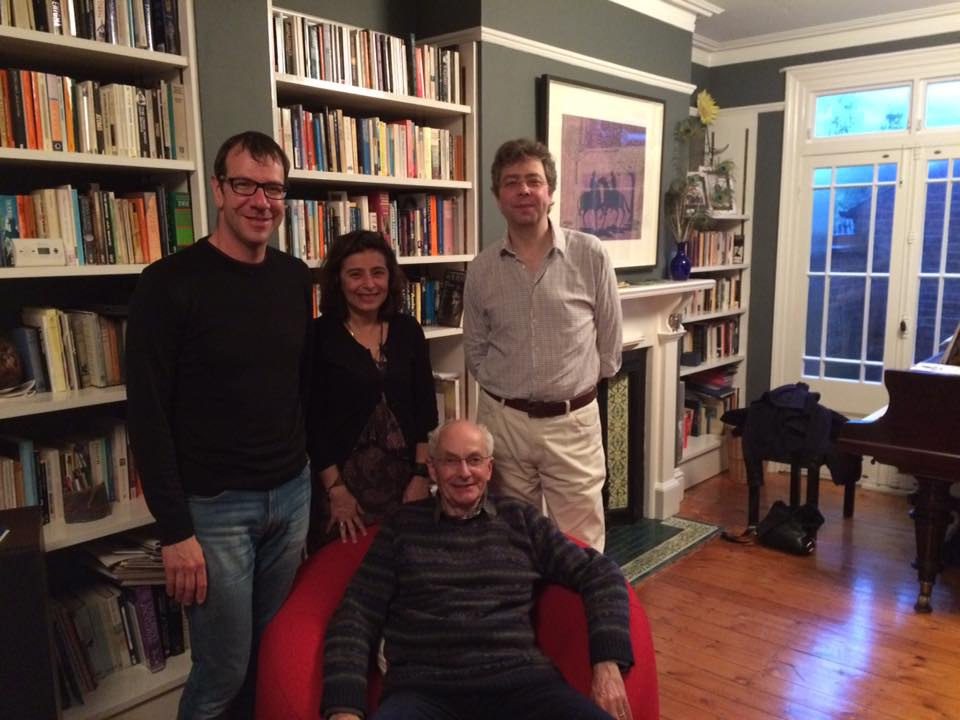
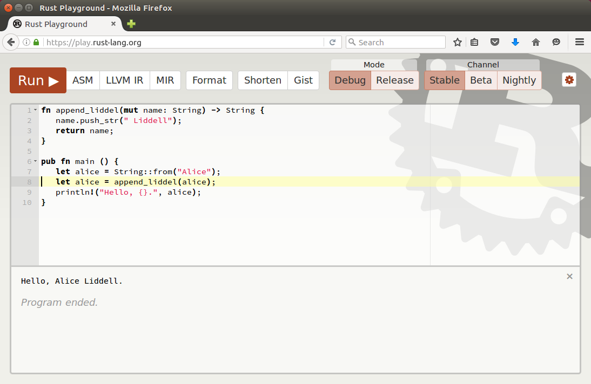

Nothing can be included in Rust that isn't at least a decade old.
— Graydon Hoare, Rust founder.
Linear types
Linear logic
Jean-Yves Girard, Linear logic, Theoretical Computer Science 50(1), 1987.
Linear logic
Got water
and flowers
Linear logic
Got water
and flowers
and a friend who will barter flowers for cigarettes
Linear logic
Got water
and flowers
and a friend who will barter flowers for cigarettes ...later...
Got water
and cigarettes
Linear logic
water
⊗ flowers
⊗ (flowers ⊸ cigarettes)
⊢ water
⊗ cigarettes
Linear logic
water
⊗ flowers
⊗ (flowers ⊸ cigarettes)
⊢ water
⊗ cigarettes
Linear logic
water
⊗ flowers
⊗ (flowers ⊸ cigarettes)
⊢ water
⊗ cigarettes
models a friend who barters once and then vanishes
Linear logic
water
⊗ flowers
⊗ !(flowers ⊸ cigarettes)
⊢ water
⊗ cigarettes
⊗ !(flowers ⊸ cigarettes)
models a friend who barters as much as you like
Linear logic
LL does not have weakening (discard)
or contraction (copy):
A ⊬
A ⊬ A ⊗ A
but recovers them for banged formulae:
!A ⊢
!A ⊢ !A ⊗ !A
Linear types

Gavin Bierman, Valeria de Paiva, Martin Hyland (seated) and Nick Benton,
A Term Calculus for Intuitionistic Linear Logic, Proc. TLCA, 1993
Linear types
Curry-Howard (constructive logic):
propositions are types,
proofs are typed programs Gang of Four (constructive linear logic):
propositions are linear types,
proofs are linearly typed programs
Linear types
Linear types
Linear types
Linear types
Mutable References
Mutation
Mutating in-place is attractive:
Less copying.
Existing APIs use it.
Mutation
Mutating in-place has problems:
Thread safety.
Aliasing (e.g. simultaneously iterating and mutating a container).
Semantics?
Mutation
Linear types make this simpler.
Model in-place mutation by consuming the old value
and producing a new one: A ⊸ A
This is call-by-value-return.
Mutation

Mutation
Problem 1: doesn't scale well with multiple arguments.
Mutation
Problem 2: doesn't cope with arguments that aren't mutated, so can be aliased.
References
Solution: use call-by-reference rather than call-by-value-result.
References
Rust has two reference types:
&A: a copyable reference to an immutable A.
&mutA: a linear reference to a mutable A.
References are borrowed:
if v : A
then &v : &A
(ditto &mut).
Rather than (A ⊗ B) ⊸ (A ⊗ C),
mutating functions have type (&mut A ⊗ B) ⊸ C.
References
References
But why is this sound?
Region-based memory management
Region-based memory management
Mads Tofte and Jean-Pierre Talpin,
Implementation of the typed call-by-value λ-calculus using a stack of regions, Proc. PoPL, 1994
Region-based memory management
Problem: this program suffers from use-after-free.
Region-based memory management
Problem: this program suffers from use-after-free.
Region-based memory management
Rust reference types actually carry lifetimes:
&α A: a copyable reference with lifetime α to an immutable A.
&αmutA: a linear reference with lifetime α to a mutable A.
Functions are lifetime-polymorphic.
Lifetime inference usually allows lifetimes to be omitted.
Region-based memory management
Example after lifetime inference.
Region-based memory management
Rust lifetimes are very similar to Tofte-Talpin regions:
Lifetimes are nominal (gensym-like).
Types and lifetimes are separate kinds.
References are annotated with lifetimes.
There are some differences:
Lifetimes do not form a stack.
Lifetimes do not exist at run-time.
Servo
Servo
A few of the >500 Servo contributors
Servo
Next generation web rendering engine.
About 1 million Rust LoC, incluing about 250 dependencies.
Mostly Rust, some C/C++ (Spidermonkey, openssl, ...)
Some Rust code is unsafe or uses dynamic checks.
No buffer overflows in safe Rust code.
The largest linearly typed program in the world?
Servo
Lessons Learned
Lessons learned
Linear types and region analysis scale up.
People care about safety+efficiency (most loved technology).
It often takes 20 years for research to get into production.
“Industrially relevant” research is not always the most relevant to industry.

 Problem: this program suffers from use-after-free.
Problem: this program suffers from use-after-free.